| 日付 | 2013年12月22日（日） |
|---|---|
| 山域 | 三浦半島 |
| メンバー | 家族（妻、長女・2歳、長男・0歳） |
| 山行形態 | 子連れ日帰り |
| アクセス | 電車、バス |
| ルート (Map) | 北鎌倉駅 (8:58) - (9:27) 登山道入口 - (10:00) 十王岩 (10:13) - (10:52) 大平山 (11:33) - (12:39) 瑞泉寺 - (12:57) 大塔宮バス停 |
今年もあとわずかとなり、2013年最後の山登りに出かけることにする。
目的地は鎌倉アルプス。5年前に訪れた時とほぼ同じコースを歩く。
車でのアクセスが困難な場所のため、今回は電車で移動。
オムツやミルクなどをザックに詰める必要があるため、
今回は子供用のキャリアは持って行けない。
娘には何としてでも全行程歩いてもらうつもりだ。
北鎌倉駅に到着。標高25m。
前回来たときは大混雑だったが、紅葉シーズンはもう終わっているため、人影は多くない。
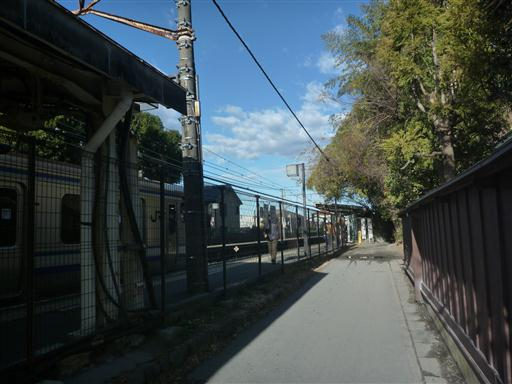
静かな街並みの中を歩いていく。
都心から少し離れているが、この辺りは高級住宅街だ。
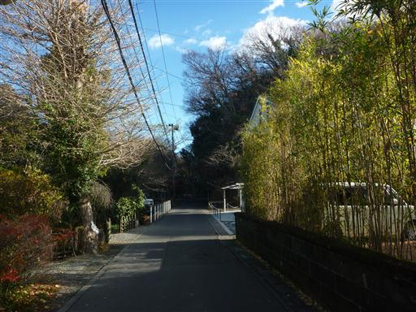
明月院の前を通る。
鎌倉アルプスは建長寺から登るのが一般ルートだが、そのルートだと拝観料をとられてしまう。
そのため、今回は明月院を回り込んでいく裏道を辿っていく。

住宅街が続く道を途中で右に折れて、ものすごく急な坂を登っていく。
こちらの裏道もそこそこ登山者が歩いている。
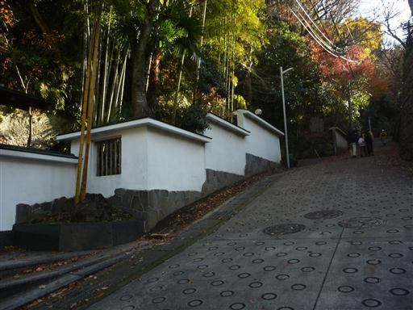
坂はどんどん急になり、階段が現れる。
娘は初めこそ歩くのを渋っていたが、途中からは快調に歩いている。
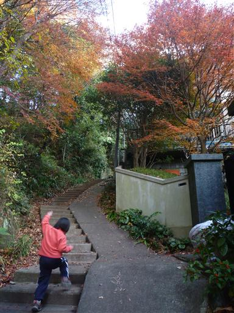
階段を登りきると登山道の入口に到着する。
案内標識の類は少ないので、ある程度下調べをしておかないとここまでたどり着くのは難しそうだ。
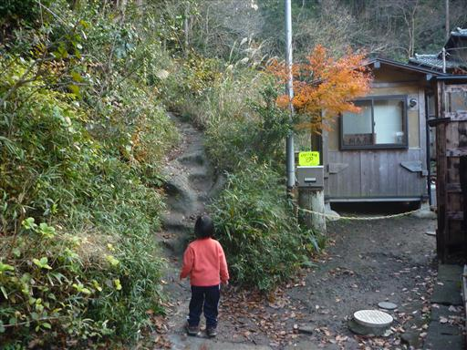
笹原が広がる樹林帯の中を登っていく。
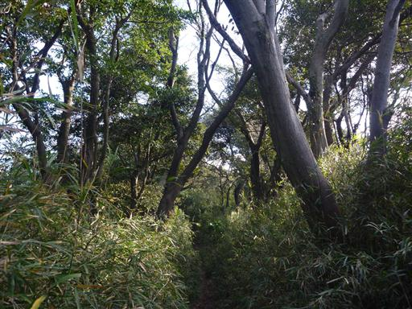
しばらく登ると今度は下りが始まる。せっかく登ったのに少しもったいない。
建長寺からのルートの方が体力的には少し楽そうだ。
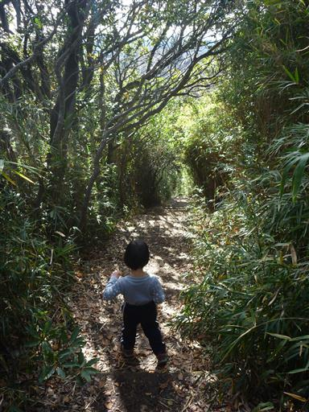
登山道からは所々で鎌倉の街並みが間近に展望できる。
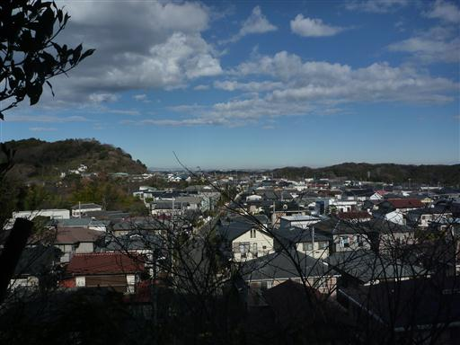
建長寺からのルートと合流し、しばらく歩くと十王岩に到着する。
岩には3体の仏像が刻まれている。
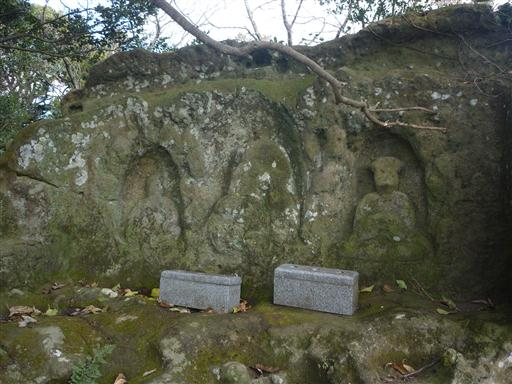
岩の上からは素晴らしい展望が広がる。
直線の大通りは鶴岡八幡宮の参道、その背後には相模湾が広がっている。
1時間ほど歩いたので、岩の横で小休止をとる
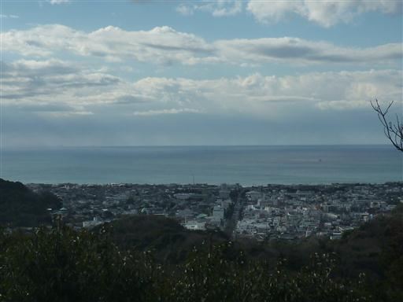
休憩をとったら再び出発。難所は娘と手をつないで乗り越える。
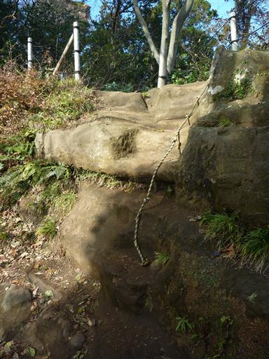
分岐点に到着。行程がはかどらない場合は、大平山をスキップしてここから下山する予定だったが
割と快調に歩いているため、このまま先に進むことにする。
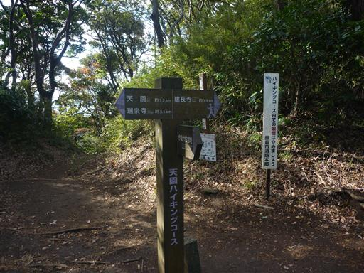
すぐ近くまで住宅街が迫っているが、狭い領域ながら美しい自然が残っている。
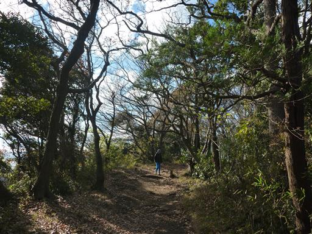
所々で急な坂はあるが、登山道はよく整備されている。
娘はだいぶ歩くのが上手になり、手をつながなくてもあまり転ばなくなった。
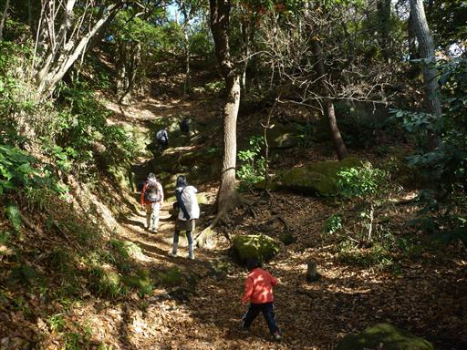
しばらく歩くと突然視界が開けて大平山山頂に到着する。標高159m。
無事山頂まで歩き通すことができた。
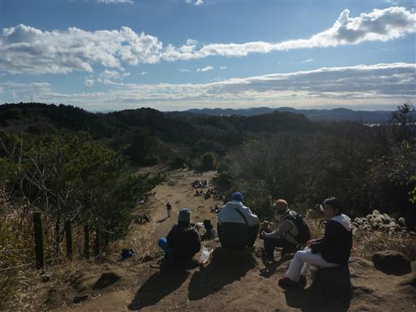
早速斜面に腰を下ろして昼食タイムだ。
昼食後は斜面で遊んでいた娘が転んで、もう少しで斜面を転がり落ちるところだった。
まだまだ危なっかしい。
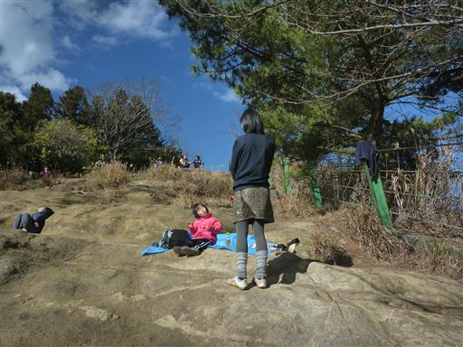
山頂の一角にはゴルフ場が広がっている。
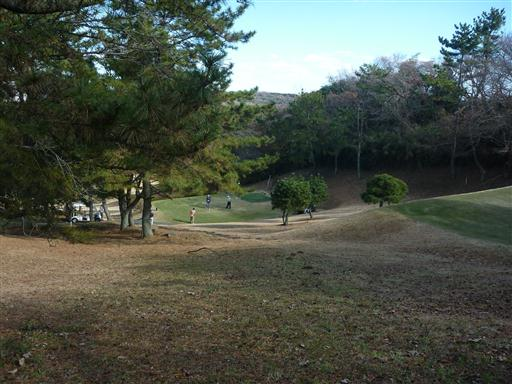
昼食休憩をとったら山頂を出発。下山も娘には歩いてもらう必要がある。
昼食をとって眠くなる頃なので、ここからが難関だ。
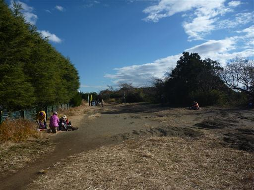
登山道になぜか車が駐車している。この登山道を車で走ったのだろうか？
幸い娘はさほど駄々をこねずに歩いている。
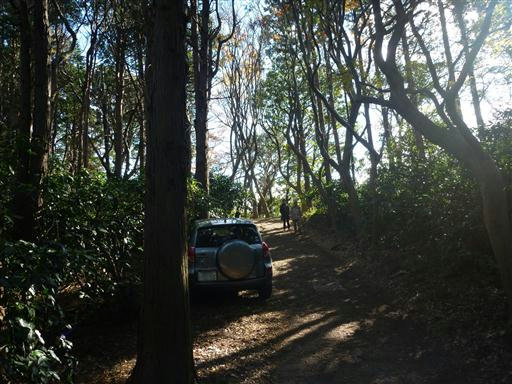
天園峠の茶屋に到着。まだ出発したばかりなので、ここでは休憩せずそのまま歩を進める。
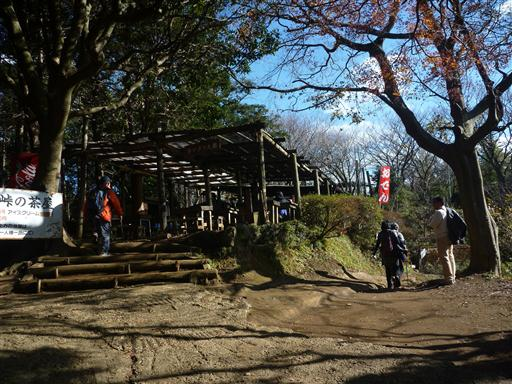
途中で富士山の展望スポットが現れる。
鎌倉アルプスから富士山が見えるとは知らなかった。
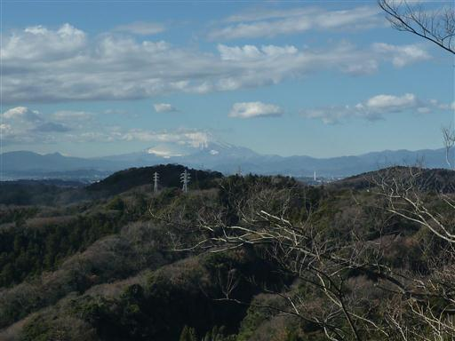
富士山の右手には雪をかぶった丹沢山塊も望むことができる。
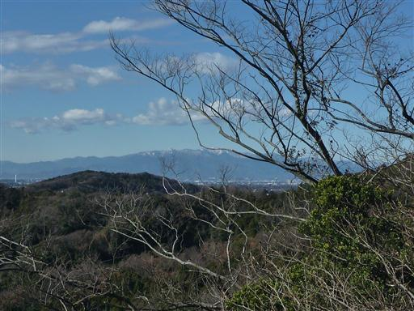
仲良さそうにピッタリとくっついた木のペアが並んでいる。
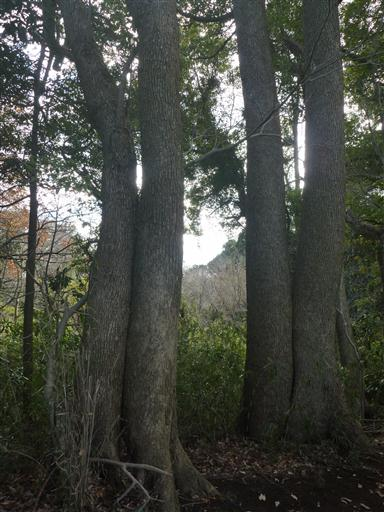
こちらはたくさんの大木。
鎌倉の地でよくこれだけの自然が残されたものだと本当に感心する。
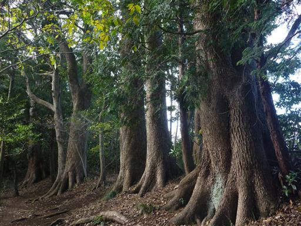
木の枝にリスを発見。何匹かのリスが幹や枝の上を行ったり来たりしている。
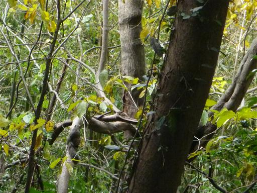
豆のさやのようなものを見つける。かなり堅いが何の植物だろうか？
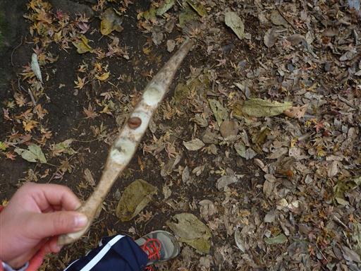
最後は長い下りを下って、無事下山口に到着する。
娘はここまでよく歩いたが、バス停まではまだもう少しの道のりがある。
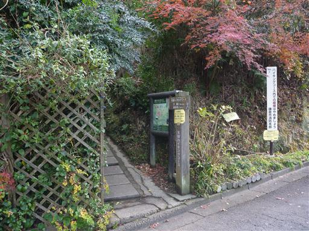
瑞泉寺の門を潜る。娘は疲れているので瑞泉寺観光もスキップだ。
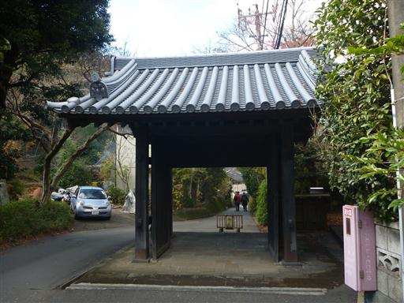
20分ほど車道を歩き大塔宮バス停に到着する。標高20m。
娘が登り下りとも歩き切ったのは7月の高尾山以来の快挙だ。
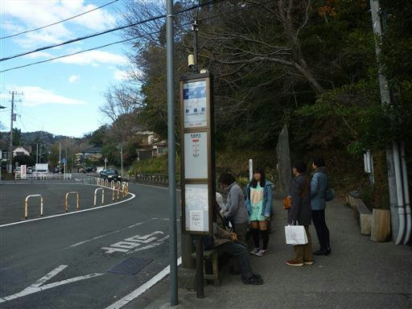
帰りは鎌倉駅近くの店で紫いもソフトクリームを食べる。
頑張って歩いたご褒美だ。
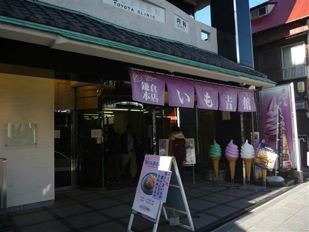
ソフトクリームを食べたら鶴岡八幡宮の参道を歩いて鎌倉駅を目指す。
ここに来て娘が駄々をこね始めたので最後は仕方なく抱っこ。
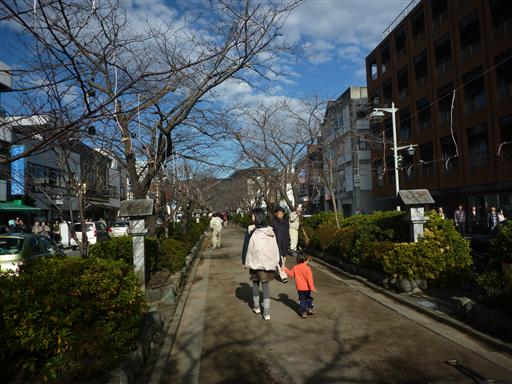
鶴岡八幡宮の大きな鳥居を潜る。鎌倉駅はもうすぐそこだ。
今回はコースタイム2時間半の行程を、休憩を除いて3時間で歩き切った。
帰りの電車では娘は爆睡かと思いきや全く眠らず、逆にこちらがうたた寝してしまった。
家に帰ってからも全く昼寝をせずで、本当に体力が付いたと感じた山行だった。
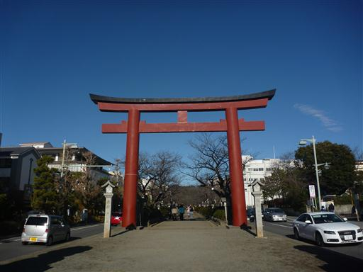